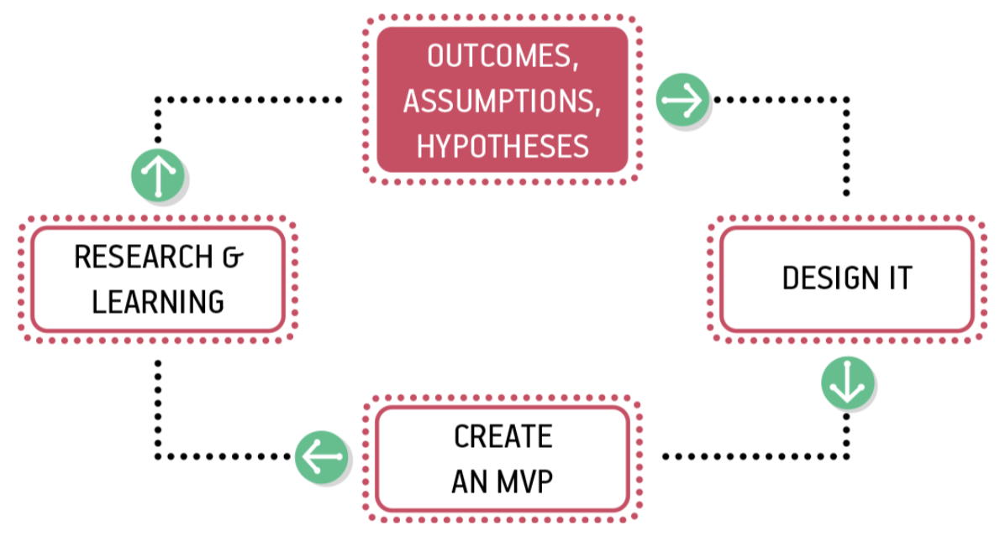
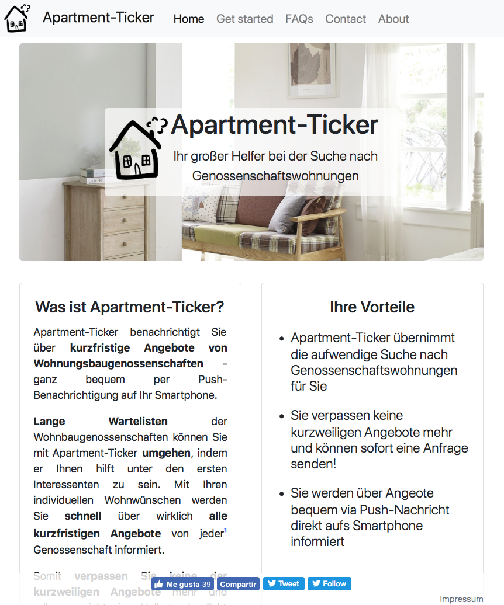

layout: true name: header_and_banner <img src="assets/Hawhamburg-logo.svg" class="logo"> <img src="assets/haw_banner.png" class="banner"> --- class: middle .center[ ### Application of the Lean UX methodology to a startup in its seed- and development phase in order to verify the methodology's feasibility <br><br> Bachelor tesis presentation by #### Fabian Schimke ] --- ## Agenda 1. Introduction 1. The case: Apartment-Ticker 1. Methodology - defining hypotheses - applying methods - results 1. Conclusions --- ## 1. Introduction - foundations .center[  ] .small_font_size[ source: dev.ryber.se/lean-ux/ ] ??? # __lean startup__ (mvp, build-measure-learn) # __agile development__ (customer collab., working SW, respond to change) # __design thinking__ (hypotheses, prototypes, experiments, feedback) --- ## 1. Introduction - principles (1/3) .center[ ## Guide team organization ] - Cross-functional teams - Small, dedicated, colocated - Self-sufficient and empowered - Problem-focused team ??? #better products #fast communication, one project & place #no external dependencies nor obstacles #concentrate on solving problems instead of impl. features --- ## 1. Introduction - principles (2/3) .center[ ## Guide team culture ] - Moving from doubt to certainty - Outcomes, not output - Shared understanding - Permission to fail ??? #everything assumptions until proven otherwise #measure progress with change in world #collective knowledge, over time, documents obsolete #safe environment for creativity --- ## 1. Introduction - principles (3/3) .center[ ## Guide design process ] - Small batches of work mitigates risk - Continuous discovery using GOOB - Externalizing the work - Making over analysing ??? #work divided small pieces, step-by-step validation, reject idea early stage #how users use the product and why, GOOB #externalizing work, make ideas visible #make ideas concreate, no debating without market-based data --- ## 1. Introduction - process loop  .right[ .small_font_size[ source: Lean UX, 2016, O'Reilly ]] ??? #B outcomes: change world, assumption identify and transfer testable hypothesis #design studio, informal design sessions #MVP test hypothesis #R&L -> rejecting MVP or develop it further --- ## 2. The case: Apartment-Ticker .right[ .small_font_size[ .light_transparent[ source: own depiction ]]] ??? #service -> help seekers of apartments from housing associations #not only waiting lists! #but no notifications.. --- ## 3. Methodology <br> 1. Defining hypotheses 1. Applying the Lean UX methods to the case 1. Revising hypotheses ??? #M. -> answer question if Lean UX is feasible for young startups --- ## 3. Methodology - defining hypotheses <br> - There is a big need for the product. - Chatbots are a good channel. - The main product promise is understood. ??? - most relevant hypoth. in thesis are.. - acceptence criterias - feasibility --- ## 3. Methodology - applying methods (1/4) .center[ ## Outcomes, Assumptions & Hypotheses ] - Business outcomes ??? #assumptions that change world -- - Users as __proto__ personas <img src="assets/proto_persona.pdf" alt="Example of proto persona." width="30%" style="position: absolute; right: 10%; top: 30%" /> ??? === #proto = all aspects assumptive #picture, name, role #factors influence behavior #needs, obstacles & desires -- - User outcomes ??? === #a little bit beyond persona #what user/persona accomplish #user's feelings #life goal -- - Features .small_font_size_extra[ source: Lean UX, 2016, O'Reilly ] ??? === #We achieve B. outcome #if this user/persona #can achieve following U. outome #with this feature --- ## 3. Methodology - applying methods (2/4) .center[ ## Design it in design studio sessions ] ??? #problem statement #everyone sketches a solution #pairing up #converging on one idea --- ## 3. Methodology - applying methods (3/4) .center[ ## Create an MVP ] - An MVP test either value or implementation details of an idea -- - Be clear about learning goals -> measure behavior -- - Go small / Get to the point / Prioritize ruthlessly -- - Use a clear call to action -- - Stay agile / Don't reinvent the wheel -- - Talk to users -- --- ## 3. Methodology - applying methods (4/4) .center[ ## Research & learnings ] - Collaborative research - Continuous learning  ??? #usability testing event #pair of two armed with one MVP #share learnings among team #continuously --- ## 3. Methodology - results - teamwide understanding of - current status quo of the product - where to go next ??? #Results of having applied the methods: teamwide understanding status quo -- - sticky notes with ideas - low-fidelity design fragments - prototypes & MVPs ??? #sticky notes, design frag., protot. & MVPs as seen in pres. -- - regular insights from customers - the team benefits of - shared understanding - strong feeling of ownership - cross-functionality ??? #regular insights f. cust.-> trust in brand #team benefits: shared underst., feeling of ownership, cross-functionality --- ## 4. Conclusions Following hypotheses __could be validated__ within two process cycles: - There is a big need for the product. - Chatbots are a good channel. - The main product promise is understood. <br> __→__ Lean UX was feasibly for this project. __→__ To expand the conclusion, further research is necessary. ??? #finally I want to share conclusions that can be drawn --- ## Literature - Jeff Gothelf and Josh Seiden. Lean UX. O'Reilly, 2016 - Jerry Cao. designmodo. 2015. designmodo.com/wireframing-prototyping/ - Giff Constable. giffconstable.com. 2013. giffconstable.com/resources/ - Martin Gaedt. Rock your idea. Murmann Publishers GmbH, 2016 - Olivier Wouters. innotain.me. 2017. innotain.me/tutorial/agile-ux-lean- ux